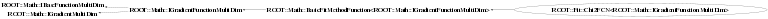

class ROOT::Fit::Chi2FCN<ROOT::Math::IGradientFunctionMultiDim>: public ROOT::Math::BasicFitMethodFunction<ROOT::Math::IGradientFunctionMultiDim>
Chi2FCN class for binnned fits using the least square methods @ingroup FitMethodFunc
This class is also known as (typedefs to this class)
ROOT::Fit::Chi2FCN<ROOT::Math::IMultiGradFunction>, ROOT::Fit::Chi2GradFunctionFunction Members (Methods)
public:
protected:
| virtual void | SetNFitPoints(unsigned int n) const |
private:
| virtual double | DoDerivative(const double* x, unsigned int icoord) const |
| virtual double | DoEval(const double* x) const |
Data Members
public:
| enum ROOT::Math::BasicFitMethodFunction | kUndefined | |
| kLeastSquare | ||
| kLogLikelihood | ||
| }; |
private:
| const ROOT::Fit::BinData& | fData | |
| const ROOT::Fit::Chi2FCN<ROOT::Math::IGradientFunctionMultiDim>::IModelFunction& | fFunc | |
| vector<double> | fGrad | for derivatives |
| unsigned int | fNEffPoints | number of effective points used in the fit |
Class Charts



Function documentation
unsigned int NFitPoints() const
effective points used in the fit (exclude the rejected one)
{ return fNEffPoints; }void SetNFitPoints(unsigned int n) const
set number of fit points (need to be called in const methods, make it const)
{ fNEffPoints = n; }